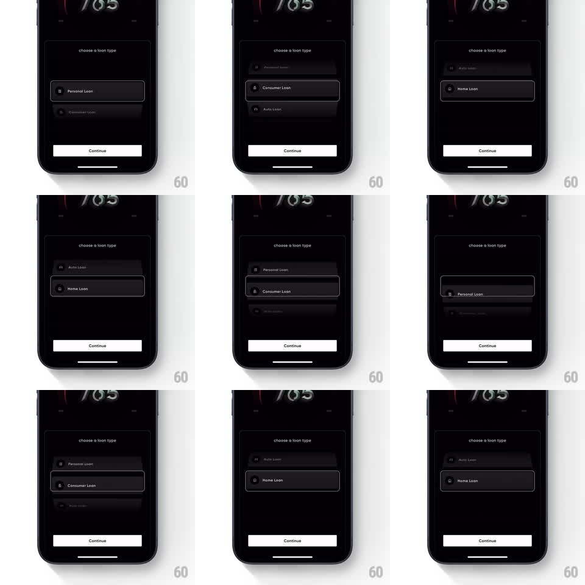

Media
Frame-by-frame

Rebuild this interaction 1:1: CRED's loan type picker - a vertical 3D cylindrical wheel of loan options (Personal Loan, Consumer Loan, Home Loan, Auto Loan) that scrolls with perspective rotation and snaps to the centered choice.

Rebuild this interaction 1:1: CRED's loan type picker - a vertical 3D cylindrical wheel of loan options (Personal Loan, Consumer Loan, Home Loan, Auto Loan) that scrolls with perspective rotation and snaps to the centered choice. ## Integration Integration: stack-agnostic spec - springs given as stiffness/damping, timed motions as duration + curve; map every value to your framework and animation library of choice. ## Scene Dark finance screen: back arrow + score header with a large "765" gauge value at top, label "choose a loan type", the wheel (rows of dark cards, each with a small icon and loan name), a white "Continue" button pinned at the bottom. ## Motion spec Pattern: 3D wheel picker with spring snapping, continuous. - Rows sit on an invisible vertical cylinder: each row's rotateX is proportional to its distance from center (+-45deg at the edges), with scale and opacity falling off (edge rows ~0.85 scale, 40% opacity). - Drag scrolls rows 1:1; on release the wheel carries momentum, decelerates (friction ~0.94 per frame), then springs the nearest row to center (spring ~350/22, settle under 300ms). - The centered row gets a subtle highlight: full opacity, 100% scale, thin border brightens. - Each snap fires a light haptic. - Header, gauge, and Continue button are static. ## Calibration - Perspective must be shallow (rotateX max ~45deg); steeper angles make rows unreadable mid-scroll. - Row content stays upright inside the rotating frame - counter-rotating text looks like a slot machine glitch. ## Reduced motion Rows scroll flat (no rotateX) but keep snap behavior; momentum disabled. ## Don't miss - The highlight follows the physics, not the drag - during momentum the highlight hops rows as they pass center. - Exactly one row is ever fully highlighted; easing two rows at half-opacity reads as indecision.